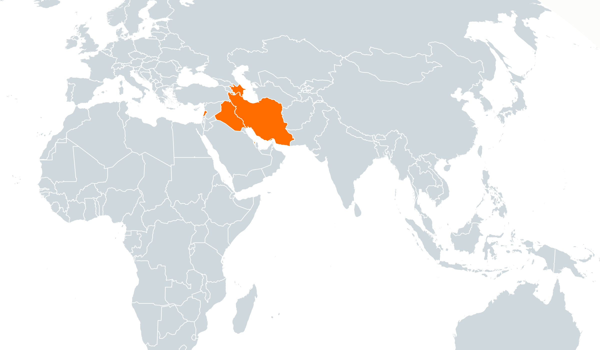
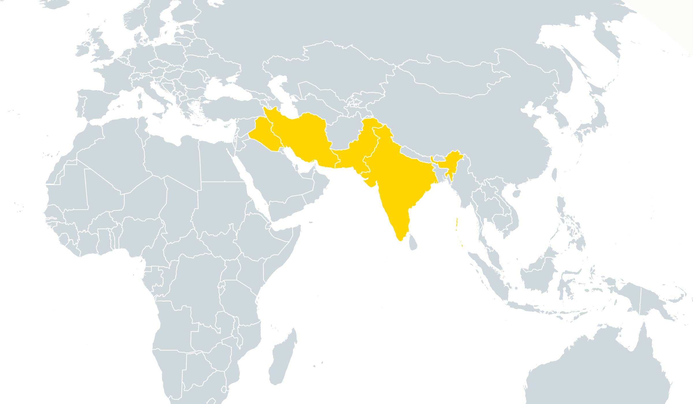

Our Grand Old Party
This problem is cyclical. Having a lack of understanding in the populous results in our elected officials knowing less. If our elected officials know less, then they will make misleading and incorrect public statements, whether intentional or not, that will further spread misinformation among the general public. As this process repeats itself we wind up with more and more outlandish ideas coming out of the political sphere. For example, the leading Republican candidates for president right now are Donald Trump and Ben Carson. More than 50% of registered Republicans would vote for one of those two candidates if the Republican primaries were held today. If you pit one of them against Hillary Clinton in a general election simulation, either one takes home, on average, between 45%-52% of votes from all Americans3. Ben Carson has publicly compared Syrian refugees to rabid dogs4, and Donald Trump has famously stated that he thinks Mexico is sending rapists across the border to the US5. These outlandish statements may stem from personal bigotry or a lack of education in the minds of those two candidates, but the ability of these types of statements to rally the Republican base is an example of a broader problem in the US. These two candidates have symbolized a change in the American political sphere. They appeal to the baser instincts of the base of the Republican party. Real worries about security and the lack of moral fiber in American culture are completely legitimate. However, these candidates have managed to use these concerns to further their xenophobic and self-interested agendas by scaring people and whipping them into a frenzy against refugees, immigrants, and minorities. (See, Black Lives Matter protestor assaulted at Trump rally).
Bigotry and xenophobia are directly related to a lack of understanding of the differences between people and an inability to view the world through someone else's eyes. If every supporter at a Trump rally were to have to take a couple classes in world geography and modern history, I sincerely doubt that the levels of animosity and emotion directed towards people of different ethnicities, followers of different faiths, or those who speak a different language would remain as high as they do today.
3. Real Clear Politics. http://http://www.realclearpolitics.com/epolls/latest_polls. November, 2015
4. CBS News. http://www.cbsnews.com/news/ben-carson-compares-syrian-refugees-to-rabid-dogs-calls-for-more-u-s-vetting. November 19, 2015
5. Real Clear Politics. http://www.nytimes.com/2015/06/17/us/politics/donald-trump-runs-for-president-this-time-for-real-he-says.html. June 16, 2015

DONALD TRUMP
"When Mexico sends its people, they're not sending their best. They're sending people that have lots of problems. They're bringing drugs. They're bringing crime. They're rapists."

BEN CARSON
"I would not advocate that we put a Muslim in charge of this nation."
National Origin, Ethnicity, Language, and Religion
Since 9/11, there has been a severe uptick in the stereotyping of "Middle Easterners". We hear these bigoted statements everyday, whether you are just walking down the street or watching Fox News. These statements follow one particularly uneducated line of thinking that encourages racism: they conflate being Middle Eastern with being Arab with being Muslim. Oh, how this could not be more wrong. To talk about all Muslims is to talk about 1.5 billion people, of which only 20% are Arab. Only half of Arab countries are in the "Middle East" and not all Middle Eastern countries are Arab or majority Muslim. When we discuss the Muslim world we must distinguish between differences in national origin, ethnicity, language, and even different types of Islam.
The first thing to understand about global Islam is the vast array of diverse nations who have a majority Muslim population. These nations extend from Morocco to Indonesia. Only a subset of these nations are in the Middle East. In fact, only 20% of all Muslims live in the Middle East and North Africa while 62% live in the rest of Asia (not including Middle Eastern nations) and another 15% live in sub-Saharan Africa6. The largest Muslim population in the world is in Indonesia, followed by Pakistan, India, and Bangladesh (notice that none of those countries are in the Middle East). The fact that 80% of the world's Muslims live outside of the Middle East and North Africa makes stereotyping the "Muslim Middle East" ridiculous by itself.
6. Pew Forum. http://www.pewforum.org/2009/10/07/mapping-the-global-muslim-population. October 7, 2009

Nations with Muslim populations that are greater than 40% of total population

10 largest Muslim population nations in the world
The second major differentiator between Muslims is their ethnicity. This usually coincides with language, although not always. The Arab ethnicity makes up 20% of Muslims. Nations which are a majority Arab make up a body called the Arab League. There are 23 nations in the Arab League, half of which are in the Middle East. Arabic is the indigenous language of Arabs and is a national language in all Arab league nations as well Chad and Eritrea. Here is a list of the top 10 countries with the largest numbers of Muslims, only 3 of which are majority Arab (Egypt, Algeria, and Morocco), and two of which are in the Middle East (Turkey and Egypt)7:
INSERT TABLE
7. Pew Research Center's Forum on Religion & Public Life -- Mapping the Global Muslim Population. October 2009

Arab League Nations

Nations where Arabic is an official language
The last major difference between Muslims is an individual's interpretation of Islam and this divisor is said to be, by far, the greatest cause of conflict between Muslim nations. A great example of this is the power struggle in the Middle East (resulting in current proxy wars in Yemen and Syria) between Saudi Arabia (majority Sunni) and Iran (majority Shiite). Another would be the war from 1980-1988 between Iran and Iraq (majority Shiite as well, but Saddam Hussein's ruling party represented the Sunni minority and oppressed the Shiite majority during his reign). There are two major groups: Shia (followers being Shiites) and Sunni (followers being Sunnis). Approximately 87-90% of Muslims worldwide are Sunnis while only 10-13% are Shiites. These populations are not spread out, however. There are four majority Shiite nations: Iran, Iraq, Azerbaijan, and Bahrain (there is a plurality in Lebanon). However, the four largest Shiite populations are in Iran, Pakistan, India, and Iraq (Pakistan and India having massive Sunni populations that are far larger). More than a third of the world's Shia Muslims live in Iran8.
8. Pew Forum. http://www.pewforum.org/2009/10/07/mapping-the-global-muslim-population. October 7, 2009

Shia Majority Nations

4 largest Shia population nations in the world
Terrorism
Many of the stereotypes surrounding Islam in America is the connection between extremist interpretations of Islam and terrorism. It is important to note Islam is not the only religion that has fringe groups which have terrorist elements. Terrorism is unrelated to a specific religion, take a look at the Spanish Inquisition, the KKK in America, or the persecution of Rohingya Muslims in Mynamar, all of which are cases in which extraordinary terrorizing violence happened in the name of religion. However, the huge increase in Islamist terrorism in recent years is a serious issue, but it is not the fault of Islam or all Muslims. It stems from serious sectarian differences and socioeconomic inequality in specific nations across the Muslim world. For example, the largest Muslim nation in the world, Indonesia, has no relation to any of the common terrorist groups often talked about in today's society. These groups are Al Qaeda (mainly in Pakistan and Afghanistan), Daesh or ISIS (residing in Syria, Iraq, and to a lesser degree, Libya), Al Shabab (based in Somalia), and Boko Haram (based in Nigeria). These groups are abhorrent and their followers and sympathizers make up a minuscule percentage of the Muslim population of the world. They have different ideologies and practices and operate from sub-Saharan Africa to the Himalayas and carry out attacks from Paris to Nairobi. None of them represent the religion of Islam just as the KKK does not represent Christianity.
The most current hysteria about terrorism is about Daesh, or ISIS. However, it is not difficult to understand where this group came from. When Saddam Hussein ruled Iraq, there was stability (even though stability was enforced because Saddam's reign was a brutal dictatorship that persecuted many of its own citizens). When the US misguidedly invaded Iraq in 2003, it removed this stability, even as it removed a brutal dictator. Many different actors have since filled the power vacuum in Iraq that was created after the removal of American troops at the end of the Iraq War. One of these is ISIS. While President Bush was obviously not trying to create instability or encourage terrorism, his unnecessary invasion of Iraq is the most direct cause of the rise of ISIS. This is just another example of American intervention abroad that has had unintended consequences since the end of World War II in 1945.
In my opinion, the greatest threat to global security does not come from any of these terrorist groups, however. It comes from the government of Pakistan. Pakistan is one of the few nations with nuclear weapons, yet it is one the most unstable nations on the planet. The intelligence services in Pakistan are currently embroiled in an internal power struggle between sympathizers of the Taliban (who are sympathizers of Al Qaeda) and more pro-Western elements. The massive internal strife and poverty in Pakistan creates a terribly unstable nation that has enough nuclear weapons to blow its largest neighbor, and most vehement opponent, India, off the map.
Colonial Borders
A great deal of the conflict in the world today is caused by a blatant lack of understanding of geographic and ethnic differences among populations under the control of colonial overlords. Most of the current national borders in Africa and the Middle East are the results of random lines drawn in the sand by Europeans imperialists centuries ago that have no regard for local ethnic and political lines. For example, the border between Syria and Iraq is, for the most part, a straight line in the desert. Another is the border between Algeria and Libya. Or Mali and Mauritania. There were so many random lines drawn to create nations. When this occurs, it is incredibly difficult to unify a nation around one government when there are so many differences between the populations within the country. This is a direct cause of much of the instability in the Middle East.
An Exceptional Failure
The continuing lack of geography education in US is contributing to the rise in xenophobia among Americans and a greater mistrust among foreign nations of the US. A staggering 75% of young Americans think English is the most widely spoken native language. This is just one of many factors in our chilly relationship with China (from where Mandarin, the most widely spoken native language in the world, originates). Less than 30% of American youth think it is important to know the locations of countries in the news and just 14% believe learning another language is a valuable skill9. And we wonder why we make massive foreign policy blunders such as invading Iraq, a country most of us could not even locate on a map.
9. National Geographic. http://www.nationalgeographic.com/roper2006/pdf/FINALReport2006GeogLitsurvey.pdf. May, 2006